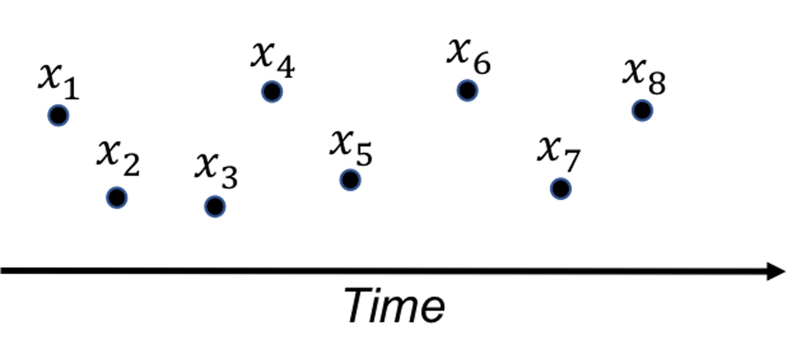
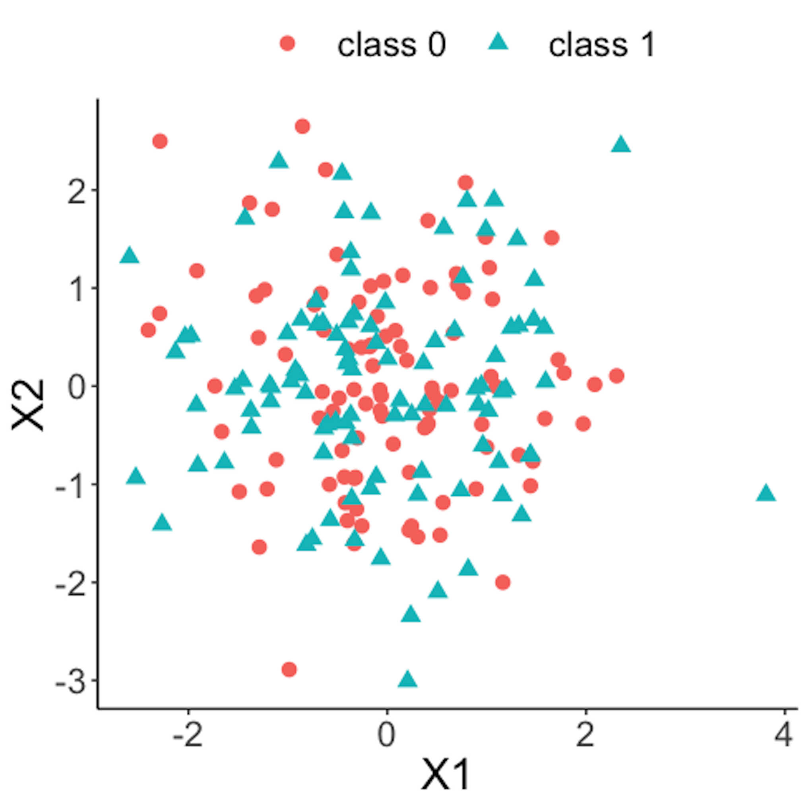
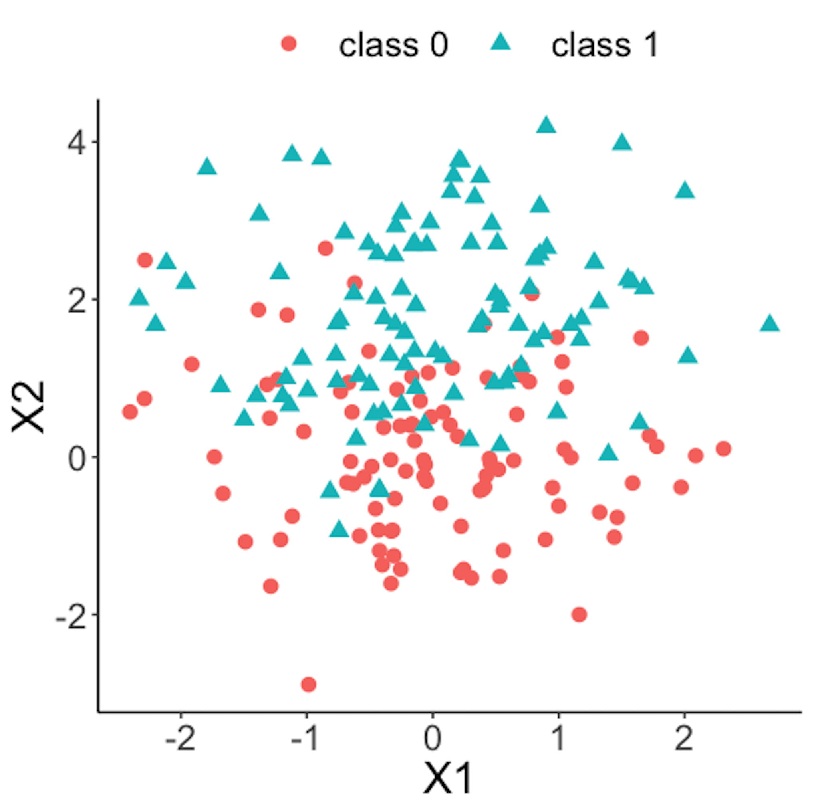
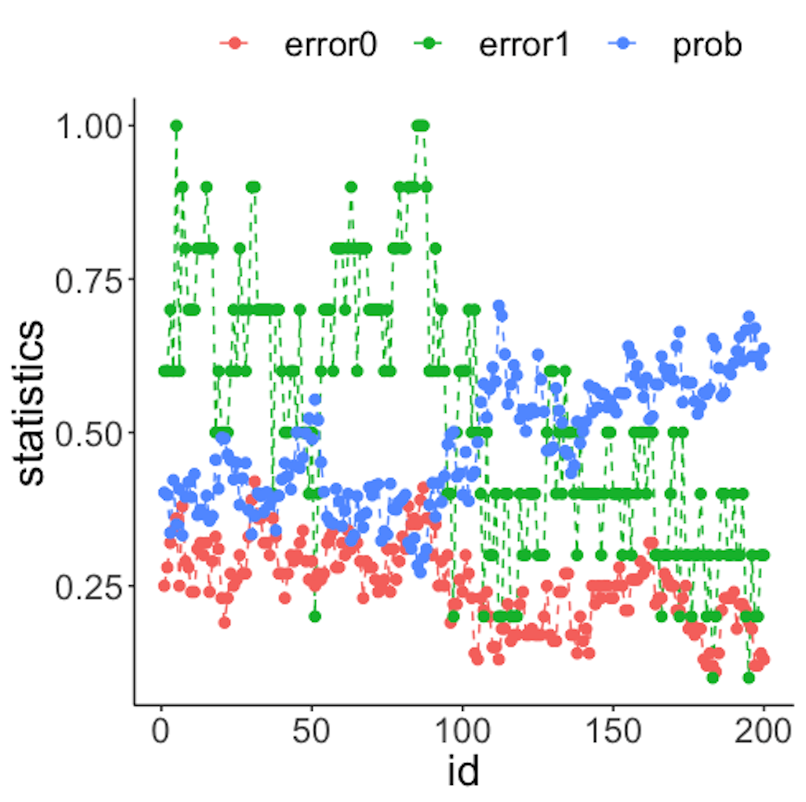
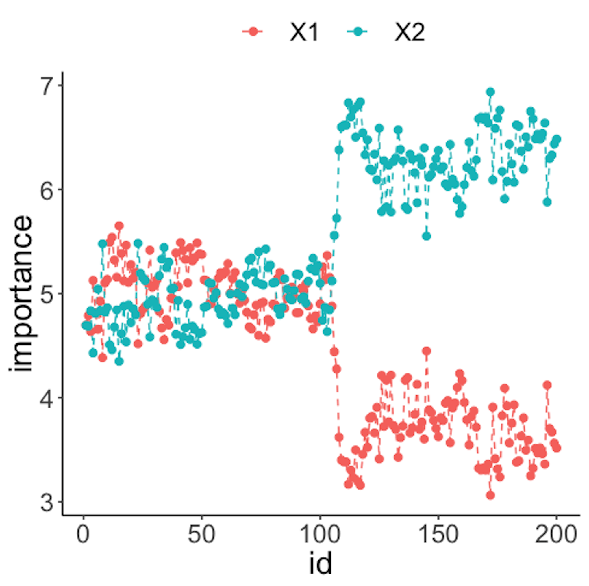
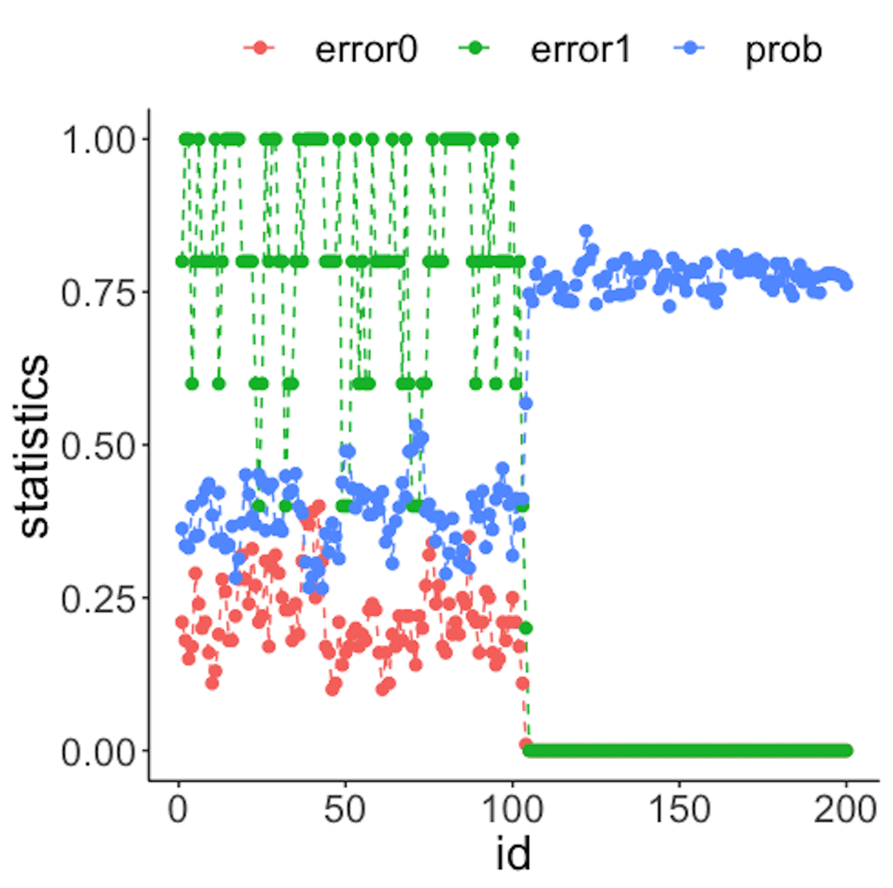
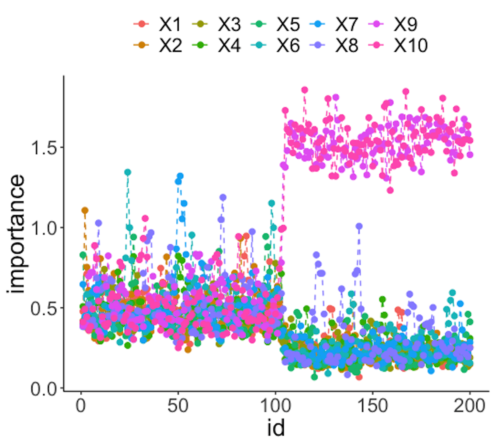

A fundamental problem in statistical process control (SPC) is illustrated in Figure 36: given a sequence of observations of a variable that represents the temporal variability of a process, is this process stable?
 Figure 36: A fundamental problem in statistical process control
SPC is built on a creative application of the statistical distribution theory. A distribution model represents a stable process—that is the main premise of SPC—while also allots a calculated proportion to chance outliers. An illustration is shown in Figure 37 (left).
Figure 37: (Left) The use of a distribution model to represent a stable process; and (right) the basic idea of a control chart
A further invention of SPC is to convert a distribution model, a static object, into a temporal chart, the so-called control chart , as shown in Figure 37 (right). A control chart has the upper and lower control limits, and a center line. It is interesting to note that Figure 37 (left) also provides a graphical illustration of how hypothesis testing works, and Figure 37 (right) illustrates the concept of control chart. The two build on the same foundation and differ in perspectives: one is horizontal and the other vertical.
A control chart is used to monitor a process. A reference data is collected to draw the control limits and the center line. Then, new data will be continuously collected over time and drawn in the chart, as shown in Figure ??.
{r f3-spcintro4, echo=FALSE,out.width="100%", fig.margin=FALSE, fig.cap=" A control chart, built on a reference data (i.e., $x_1$-$x_8$), is used to monitor future data (i.e., $x_9$-$x_{12}$). An alarm is issued when $x_{12}$ is found to be *out of the control limit*. " } knitr::include_graphics('graphics/3_spcintro4.png',dpi = 300)
Because of this dependency of SPC on distribution models, a considerable amount of interest has been focused on extending it for applications where the data could not be characterized by a distribution. Along this endeavor, how to leverage decision tree models71 Remember that the decision tree models can deal with complex datasets such as mixed types of variables, as discussed in Chapter 2. for SPC purposes has been an interesting research problem.
One such interesting framework is proposed to cast the process monitoring problem shown in Figure ?? as a classification problem: the reference data presumably collected from a stable process represents one class, while the online data collected after the reference data represents another class. If the two classes could be significantly separated, an alarm should be issued. Otherwise, if there is no change in the stable process, the two data sets must come from the same distribution, then it will be difficult to classify the two data sets. This will result in a large classification error.
In other words, the classification error is an indicator that we can monitor72 While process monitoring sounds straightforward, the real challenge sometimes lies in the question about what to monitor, and how..
Here we introduce the real-time contrasts method (RTC). The key idea of RTC is to have a sliding window , with length of \(L\), that includes the most recent data points to be compared with the reference data. We label the reference data as one class, and the data points in the sliding window as another class. We track the classification error to monitor the process.
We illustrate the RTC method through a simple problem. The collected data for monitoring is shown in Table 7. The reference data is \(\{1,2\}\).
Table 7: Example of an online dataset with \(4\) time points
| Data ID | \(1\) | \(2\) | \(3\) | \(4\) |
|---|---|---|---|---|
| Value | \(2\) | \(1\) | \(3\) | \(3\) |
To monitor the process, we use a window size of \(2\). This means the first monitoring action takes place at the time when the \(2^{nd}\) data point is collected. The reference dataset, \(\{1,2\}\), is labeled as class \(0\), and the two online data points, \(\{2,1\}\), are labeled as class \(1\). As these two datasets are identical, the classification error rate is as large as 0.5. No alarm is issued.
At the next time point, the sliding window now includes data points \(\{1,3\}\). A classification rule “if value \(\leq 2\), class \(0\); else, class \(1\)” would achieve the best classification error rate as \(0.25\). An alarm probably should be issued.
At the next time point, the sliding window includes data points \(\{3,3\}\). The same classification rule “if value \(\leq 2\), class \(0\); else, class \(1\)” can classify all examples correctly with error rate of \(0\). An alarm should be issued.
We see that the classification error rate is a monitoring statistic to guide the triggering of alerts. It is also useful to use the probability estimates of the data points as the monitoring statistic. In other words, the sum of the probability estimates from all data points in the sliding window can be used for monitoring, which is defined as
\[p_{t}=\frac{\sum_{i=1}^{w} \hat{p}_{1}\left(x_{i}\right)}{w}.\]
Here, \(\boldsymbol x_i\) is the \(i^{th}\) data point in the sliding window, \(w\) is the window size, and \(\hat{p}_1(\boldsymbol x_i)\) is the probability estimate of \(\boldsymbol x_i\) belonging to class \(1\). At each time point in monitoring, we can obtain a \(p_t\). Following the tradition of control chart, we could chart the time series of \(p_t\) and observe the patterns to see if alerts should be triggered.
We have coded the RTC method into a R function, Monitoring(), as shown below, to give an example about how to write self-defined function in R. This function takes two datasets as input: the first is the reference data, data0, and the second is the online data points, data.real.time. The window size should also be provided in wsz. And we use a classification method named random forest73 More details are in Chapter 4. to build a classifier. The Monitoring() function returns a few monitoring statistics for each online data point, and a score of each variable that represents how likely the variable is responsible for the process change.
library(dplyr)
library(tidyr)
library(randomForest)
library(ggplot2)
theme_set(theme_gray(base_size = 15) )
# define monitoring function. data0: reference data;
# data.real.time: real-time data; wsz: window size
Monitoring <- function( data0, data.real.time, wsz ){
num.data.points <- nrow(data.real.time)
stat.mat <- NULL
importance.mat <- NULL
for( i in 1:num.data.points ){
# at the start of monitoring, when real-time data size is
# smaller than the window size, combine the real-time
# data points and random samples from the reference data
# to form a data set of wsz
if(i<wsz){
ssfr <- wsz - i
sample.reference <- data0[sample(nrow(data0),
ssfr,replace = TRUE), ]
current.real.time.data <- rbind(sample.reference,
data.real.time[1:i,,drop=FALSE])
}else{
current.real.time.data <- data.real.time[(i-wsz+
1):i,,drop=FALSE]
}
current.real.time.data$class <- 1
data <- rbind( data0, current.real.time.data )
colnames(data) <- c(paste0("X",1:(ncol(data)-1)),
"Class")
data$Class <- as.factor(data$Class)
# apply random forests to the data
my.rf <- randomForest(Class ~ .,sampsize=c(wsz,wsz), data=data)
# get importance score
importance.mat <- rbind(importance.mat, t(my.rf$importance))
# get monitoring statistics
ooblist <- my.rf[5]
oobcolumn=matrix(c(ooblist[[1]]),2:3)
ooberrornormal= (oobcolumn[,3])[1]
ooberrorabnormal=(oobcolumn[,3])[2]
temp=my.rf[6]
p1vote <- mean(temp$votes[,2][(nrow(data0)+1):nrow(data)])
this.stat <- c(ooberrornormal,ooberrorabnormal,p1vote)
stat.mat <- rbind(stat.mat, this.stat)
}
result <- list(importance.mat = importance.mat,
stat.mat = stat.mat)
return(result)
}To demonstrate how to use Monitoring(), let’s consider a \(2\)-dimensional process with two variables, \(x_1\) and \(x_2\). We simulate the reference data that follow a normal distribution with mean of \(0\) and standard deviation of \(1\). The online data come from two distributions: the first \(100\) data points are sampled from the same distribution as the reference data, while the second \(100\) data points are sampled from another distribution (i.e., the mean of \(x_2\) changes to \(2\)). We label the reference data with class \(0\) and the online data with class \(1\).
# data generation
# sizes of reference data, real-time data without change,
# and real-time data with changes
length0 <- 100
length1 <- 100
length2 <- 100
# 2-dimension
dimension <- 2
# reference data
data0 <- rnorm( dimension * length0, mean = 0, sd = 1)
# real-time data with no change
data1 <- rnorm( dimension * length2, mean = 0, sd = 1)
# real-time data different from the reference data in the
# second the variable
data2 <- cbind( V1 = rnorm( 1 * length1, mean = 0, sd = 1),
V2 = rnorm( 1 * length1, mean = 2, sd = 1) )
# convert to data frame
data0 <- matrix(data0, nrow = length0, byrow = TRUE) %>%
as.data.frame()
data1 <- matrix(data1, nrow = length2, byrow = TRUE) %>%
as.data.frame()
data2 <- data2 %>% as.data.frame()
# assign variable names
colnames( data0 ) <- paste0("X",1:ncol(data0))
colnames( data1 ) <- paste0("X",1:ncol(data1))
colnames( data2 ) <- paste0("X",1:ncol(data2))
# assign reference data with class 0 and real-time data with class 1
data0 <- data0 %>% mutate(class = 0)
data1 <- data1 %>% mutate(class = 1)
data2 <- data2 %>% mutate(class = 1)
# real-time data consists of normal data and abnormal data
data.real.time <- rbind(data1,data2) Figure 38: Scatterplot of the reference dataset and the first \(100\) online data points; both data come from the process under normal condition
Figure 38 shows the scatterplot of the reference dataset and the first \(100\) online data points. It can be seen that the two sets of data points are similar.
data.plot <- rbind( data0, data1 ) %>% mutate(class = factor(class))
ggplot(data.plot, aes(x=X1, y=X2, shape = class, color=class)) +
geom_point(size=3)Figure 39 shows the scatterplot of the reference dataset and the second \(100\) online data points.
data.plot <- rbind( data0, data2 ) %>% mutate(class = factor(class))
ggplot(data.plot, aes(x=X1, y=X2, shape = class,
color=class)) + geom_point(size=3) Figure 39: Scatterplot of the reference dataset and the second \(100\) online data points that come from the process under abnormal condition
Now we apply the RTC method. A window size of \(10\) is used. The error rates of the two classes and the probability estimates of the data points over time are shown in Figure 40 drawn by the following R code.
wsz <- 10
result <- Monitoring( data0, data.real.time, wsz )
stat.mat <- result$stat.mat
importance.mat <- result$importance.mat
# plot different monitor statistics
stat.mat <- data.frame(stat.mat)
stat.mat$id <- 1:nrow(stat.mat)
colnames(stat.mat) <- c("error0","error1","prob","id")
stat.mat <- stat.mat %>% gather(type, statistics, error0,
error1,prob)
ggplot(stat.mat,aes(x=id,y=statistics,color=type)) +
geom_line(linetype = "dashed") + geom_point() +
geom_point(size=2)Figure 40: (Left) Chart of the monitoring statistics over time. Three monitoring statistics are shown: error0 denotes the error rate in Class \(0\), error1 denotes the error rate in Class \(1\), and prob denotes the probability estimates of the data points; (right) chart of the importance score of the two variables
We have known that the process shift happened on \(x_2\) after the \(100^{th}\) data point—and that is exactly when a good monitoring statistic should signal the process change. Check Figure 40 (left) and draw your observation.
As the two classes are separated, we could check which variables are significant. The importance scores of the two variables obtained by the random forest model are shown in Figure 40 (right) drawn by the following R code.
# plot importance scores for diagnosis
importance.mat <- data.frame(importance.mat)
importance.mat$id <- 1:nrow(importance.mat)
colnames(importance.mat) <- c("X1","X2","id")
importance.mat <- importance.mat %>%
gather(variable, importance,X1,X2)
ggplot(importance.mat,aes(x=id,y=importance,
color=variable)) + geom_line(linetype = "dashed") +
geom_point(size=2)Figure 40 (right) shows that the scores of \(x_2\) significantly increase after the \(100^{th}\) data point. This indicates that \(x_2\) is responsible for the process change, which is true.
Let’s consider a \(10\)-dimensional dataset with \(x_1\)-\(x_{10}\). We still simulate \(100\) reference data points of each variable from a normal distribution with mean \(0\) and variance \(1\). We use the same distribution to draw the first \(100\) online data points. Then, we draw the second \(100\) online data points with two variables, \(x_9\) and \(x_{10}\), whose means changed from \(0\) to \(2\).
# 10-dimensions, with 2 variables being changed from
# the normal condition
dimension <- 10
wsz <- 5
# reference data
data0 <- rnorm( dimension * length0, mean = 0, sd = 1)
# real-time data with no change
data1 <- rnorm( dimension * length1, mean = 0, sd = 1)
# real-time data different from the reference data in the
# second the variable
data2 <- c( rnorm( (dimension - 2) * length2, mean = 0, sd = 1),
rnorm( (2) * length2, mean = 20, sd = 1))
# convert to data frame
data0 <- matrix(data0, nrow = length0, byrow = TRUE) %>%
as.data.frame()
data1 <- matrix(data1, nrow = length1, byrow = TRUE) %>%
as.data.frame()
data2 <- matrix(data2, ncol = 10, byrow = FALSE) %>%
as.data.frame()
# assign reference data with class 0 and real-time data
# with class 1
data0 <- data0 %>% mutate(class = 0)
data1 <- data1 %>% mutate(class = 1)
data2 <- data2 %>% mutate(class = 1)
# real-time data consists of normal data and abnormal data
data.real.time <- rbind(data1,data2)Figure 41: (Left) Chart of the monitoring statistics over time. Three monitoring statistics are shown: error0 denotes the error rate in Class \(0\), error1 denotes the error rate in Class \(1\), and prob denotes the probability estimates of the data points; (right) chart of the importance score of the variables
Figure 41 (left) shows that all the monitoring statistics change after the \(101^{th}\) time point, and the variables’ scores in Figure 41 (right) indicate the change is due to \(x_9\) and \(x_{10}\), which is true. The following R codes generated Figure 41 (left).
result <- Monitoring( data0, data.real.time, wsz )
stat.mat <- result$stat.mat
importance.mat <- result$importance.mat
# plot different monitor statistics
stat.mat <- data.frame(stat.mat)
stat.mat$id <- 1:nrow(stat.mat)
colnames(stat.mat) <- c("error0","error1","prob","id")
stat.mat <- stat.mat %>% gather(type, statistics, error0,
error1,prob)
ggplot(stat.mat,aes(x=id,y=statistics,color=type))+
geom_line(linetype = "dashed") + geom_point() +
geom_point(size=2)The following R codes generated Figure 41 (right).
# plot importance scores for diagnosis
importance.mat <- data.frame(importance.mat)
importance.mat$id <- 1:nrow(importance.mat)
# colnames(importance.mat) <- c("X1","X2","id")
importance.mat <- importance.mat %>%
gather(variable, importance,X1:X10)
importance.mat$variable <- factor( importance.mat$variable,
levels = paste0( "X", 1:10))
# levels(importance.mat$variable) <- paste0( "X", 1:10 )
ggplot(importance.mat,aes(x=id,y=importance,color=
variable)) + geom_line(linetype = "dashed") +
geom_point(size=2)